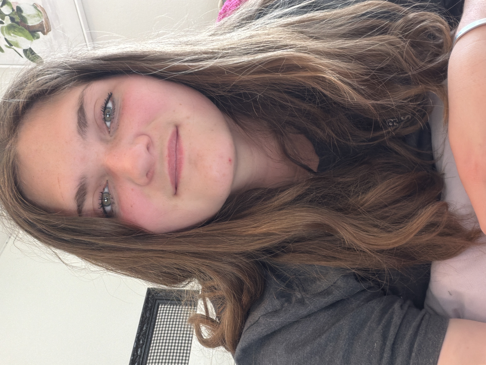

Hi! I'm brenna, welcome to my WDD 130 homepage. I love programming, the outdoors, art, creative writing, and sharks. I'm autistic, and so you'll find I can spend hours on projects without even knowing where the time went. I'm working on a dystopian trilogy, and one of my friends has told me that it's right in leauge with the hunger games. I'm not sure if it's that good, but I am very proud of how it's coming along. Writing is going to be my side business and I'll be doing Software Dev as my main career. Hence being in this class!
